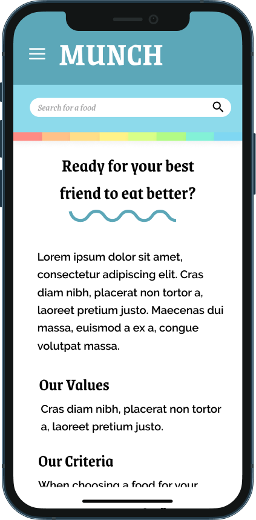
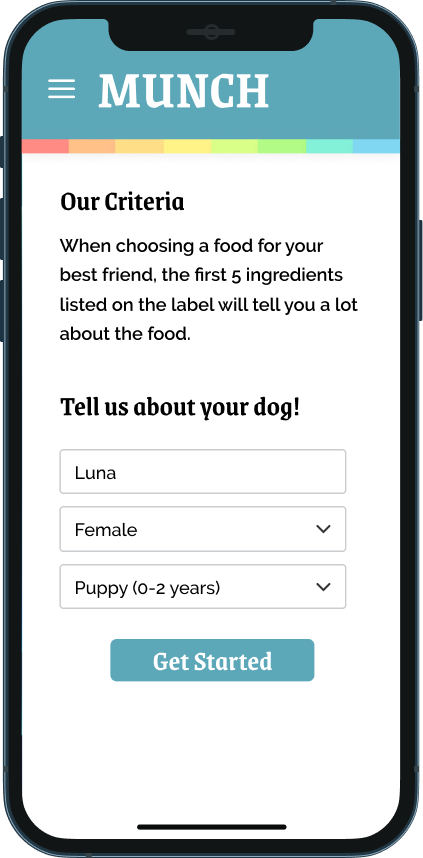
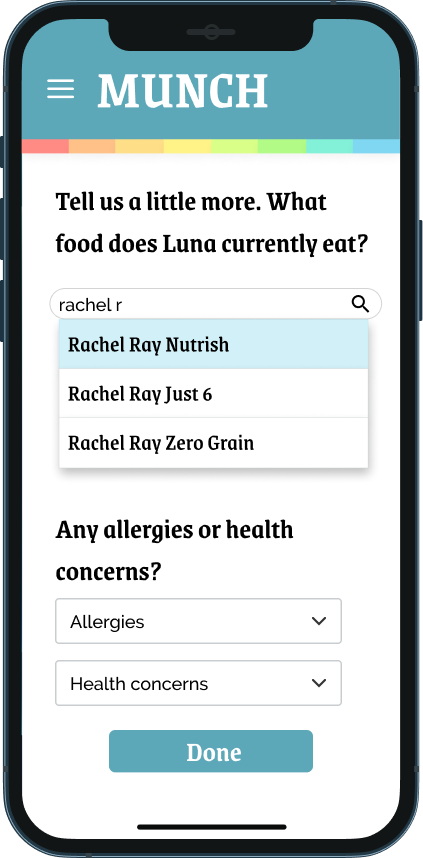
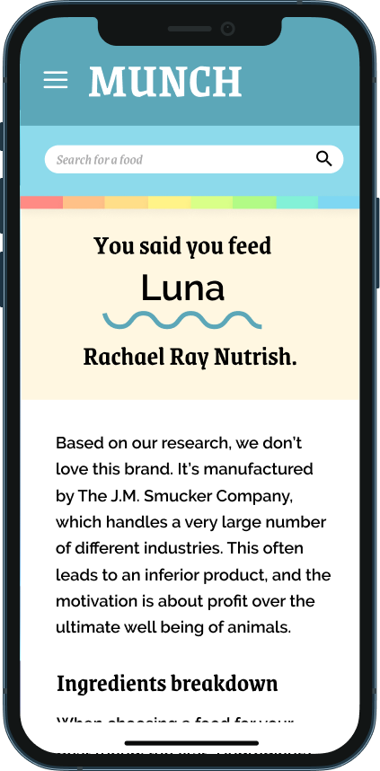
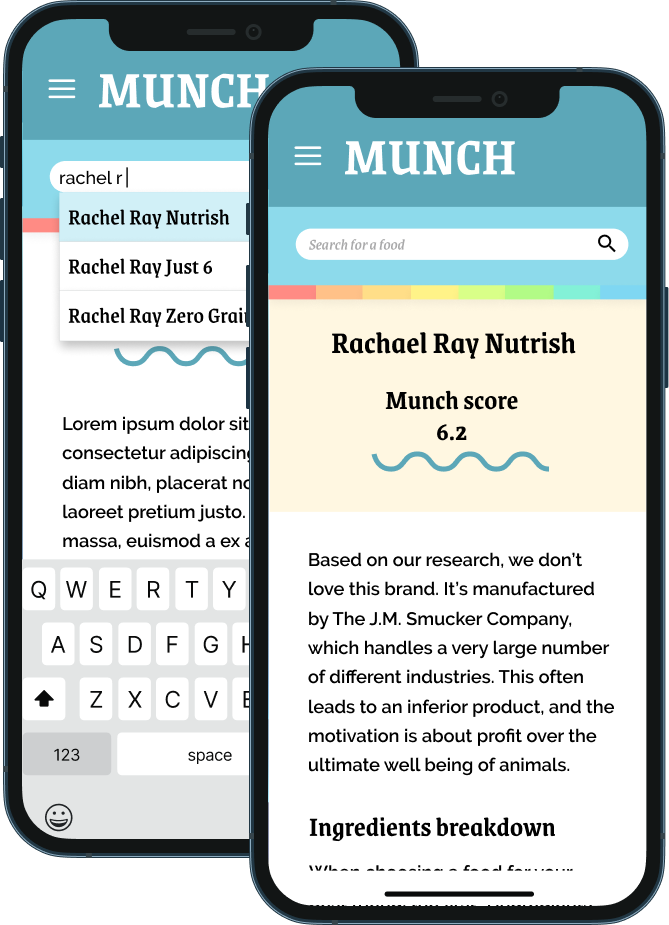

We all know the pet food industry has its dark side. We don't always know how to avoid it. To combat this, I'm creating Munch, a program designed to provide education and recommendations for ethical dog foods to the average customer. Munch's recommendations are based on transparent criteria like number of recalls, ingredient quality, company policy, and price, and helps a user find higher-quality food options compared to the user's current pet food and brand.
In 2017, I worked for a mom-and-pop pet food store after graduating and coming home from college struggling with several food intolerances of my own. Through that job I learned an extensive amount about pet food quality, and how many pets can have underlying food intolerances similar to ours that can affect their energy, mood, and well being. Knowing firsthand how much of a difference diet changes can make made this issue hit close to home. Having learned about the questionable ingredients and nutrition of many popular pet food brands, I felt very strongly that even our pets deserve to eat real foods— not inhumane proteins or fillers that add bulk without nutrition. My experience at the store showed that budget is a significant constraint when seeking a quality pet food diet, so Munch is a service that pairs consumers with food options that fit their lifestyle as well as their price point.
Munch's goal is to provide transparent, sourced research on companies, ingredients, and other other less commonly discussed considerations — like sustainability and packaging — to help people make more informed choices about what they provide their pets.
This program is intended to be a tool to find and compare the qualities of most commercial dog foods. Given that that's a lot of information to digest (pun fully intended), Munch is a web interface that keeps it simple. Here I show the find-and-compare tool, the core of the program. Foods can be searched by brand or by a set of criteria (price, ingredients, puppy/senior dog formula), and limited by price. The results are shown in context with similar brands ranked by Munch's proprietary rating system — which can be examined in depth, with reputable sources, in its own page of the site.
Using the customer's existing knowledge and opinions of popular brands helps create a relationship between their perceptions of brands and new options they may not have heard of or considered. In an ideal situation, the customer would switch from feeding a low-quality, low-nutritional value, potentially expensive food to one that has superior ingredients and value for the price. In many cases, this food may be less expensive than the popular brand they're currently using— which results in a win for both the dog and the customer.





The customers this product is trying to attract are younger, socially conscious, child-free, and are typically social media users. A strong online presence that customers actually enjoy interacting with is crucial to the brand's reputation and is the foundation of the social media advertising. A casual, conversational tone is important.